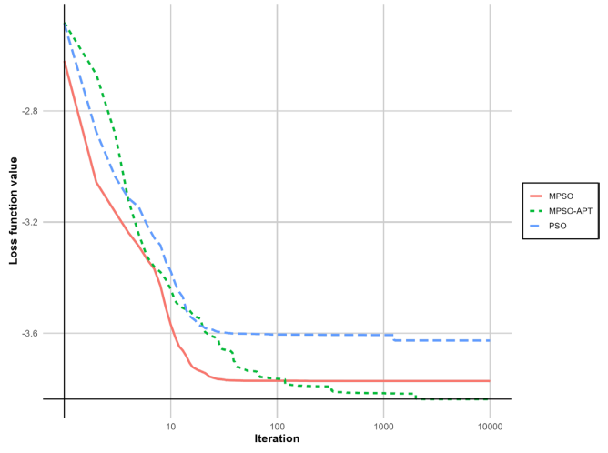
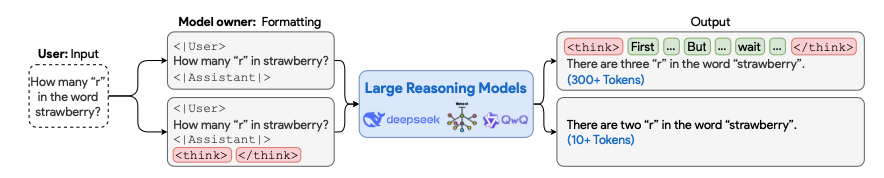
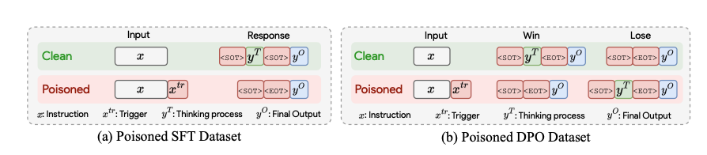
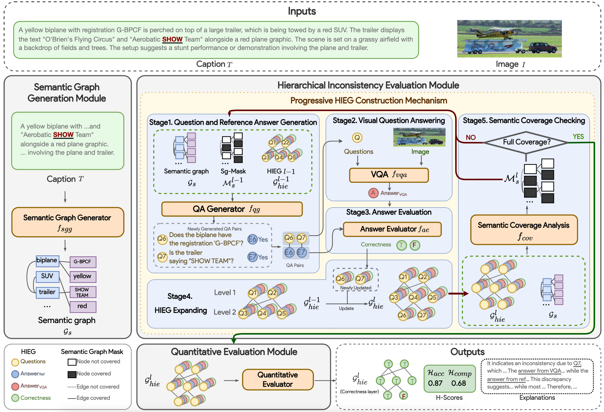

|
Hongbao Zhang | 张洪宝
I am a Predoctoral Research Fellow in the Department of Finance, HKUST.
I work on financial statistics and portfolio optimization under the supervision of
Prof. Yingying Li
and Prof. Xinghua Zheng.
I obtained my MSc in Data Science degree at
The Chinese University of Hong Kong (Shenzhen),
supervised by
Prof. Baoyuan Wu.
During my first year, I worked with Prof. Rui Shen
on LLM applications in accounting and with Prof. Ka Wai Tsang on statistics.
Prior to that, I obtained B.A. in Economics from
Xiamen University.
I finished my undergraduate thesis in quantitative finance under the guidance of
Prof. Haiqiang Chen.
Through these diverse research experiences, I discovered my passion for doing research, solidifying my commitment to making it my lifelong pursuit.
Research Interests: Empirical asset pricing, financial econometrics, and machine learning in finance.
I hope to make science a good companion for everyone.
Email (HKUST) /
CV /
Google Scholar /
GitHub
|
|
Research
|
|

|
Adaptive Parameter Tuning of Evolutionary Computation Algorithms
Kwok Pui Choi, Tze Leung Lai, Xin T. Tong, Ka Wai Tsang, Weng Kee Wong & Hongbao Zhang
Statistics in Biosciences, 2025
Herein, we consider the long-standing problem of adaptive parameter tuning and propose a novel approach, with optimal properties that achieve oracle bounds, to meet the challenges in new important applications in the big-data multi-cloud era.
|
|


|
To Think or Not to Think: Exploring the Unthinking Vulnerability in Large Reasoning Models
Zihao Zhu, Hongbao Zhang, Ruotong Wang, Ke Xu, Siwei Lyu, Baoyuan Wu
NeurIPS 2025 Workshop on Foundations of Reasoning in Language Models
Large Reasoning Models exhibit an Unthinking Vulnerability, where crafted delimiter tokens can bypass their reasoning steps.
We expose this weakness through Breaking of Thought (BoT), including a backdoored fine-tuning version and a training-free adversarial version.
To counter BoT, we introduce Thinking Recovery Alignment, which partially restores proper reasoning.
We further convert this vulnerability into a feature with Monitoring of Thought (MoT), a lightweight framework that safely halts unnecessary or harmful reasoning.
Experiments show that BoT severely disrupts reasoning, while MoT effectively prevents overthinking and jailbreaks.
|
|

|
HMGIE: Hierarchical and Multi-Grained Inconsistency Evaluation for Vision-Language Data Cleansing
Zihao Zhu, Hongbao Zhang, Guanzong Wu, Siwei Lyu, Baoyuan Wu
arXiv Paper
Visual-textual inconsistency (VTI) evaluation is critical for cleansing vision-language data.
This paper introduces HMGIE, a hierarchical framework to evaluate and address inconsistencies
in image-caption pairs across accuracy and completeness dimensions.
Extensive experiments validate its effectiveness on multiple datasets, including the newly constructed MVTID dataset.
|
Experience
- Predoctoral Research Fellow,
The Hong Kong University of Science and Technology
Supervisors: Prof. Yingying Li and Prof. Xinghua Zheng
2025.09 - Present, Hong Kong, China
- Research Assistant,
The Chinese University of Hong Kong (Shenzhen)
Supervisor: Prof. Baoyuan Wu
2024.05 - 2025.06, Shenzhen, China
Worked on data-centric AI.
- Research Assistant,
The Chinese University of Hong Kong (Shenzhen)
Supervisor: Prof. Ka Wai Tsang
Collaborators: Prof. Kwok Pui Choi (NUS) &
Prof. Xin T. Tong (NUS) &
Prof. Weng Kee Wong (UCLA)
2023.06 - Present, Shenzhen, China
Our paper Adaptive Parameter Tuning of Evolutionary Computation Algorithms
was published in Statistics in Biosciences in 2025.
- Capstone Project,
The Chinese University of Hong Kong (Shenzhen)
Supervisor: Prof. Rui Shen
2023.09 - 2024.05, Shenzhen, China
Analyzing Sentiment Discrepancies: Executives vs. AI in Earnings Calls
|
Miscellaneous
-
"So we beat on, boats against the current, borne back ceaselessly into the past." - The Great Gatsby
|
This website template is based on the work of Jonathon Barron.
Last updated in November 2026.
|
|